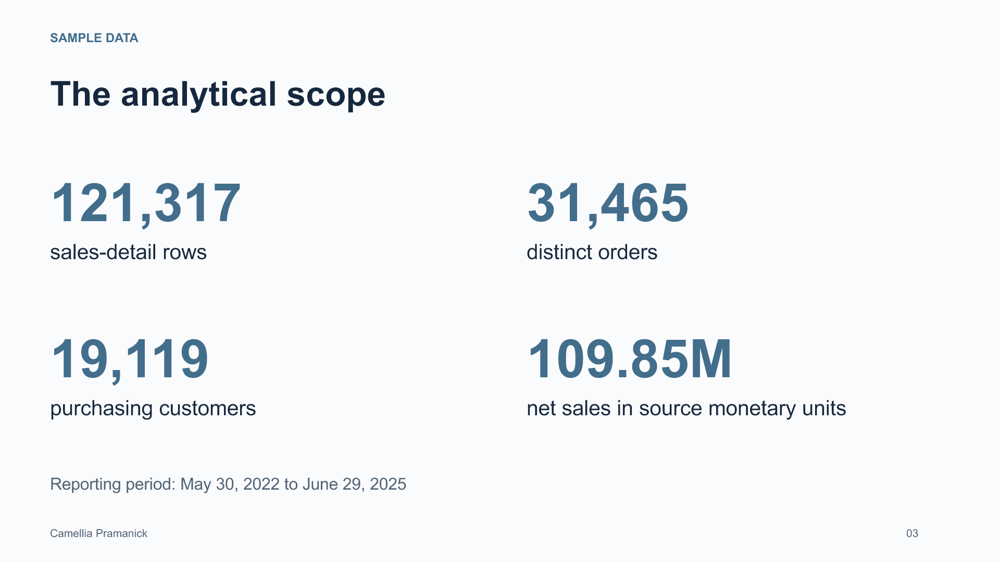
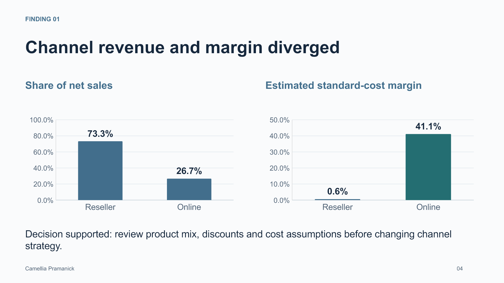
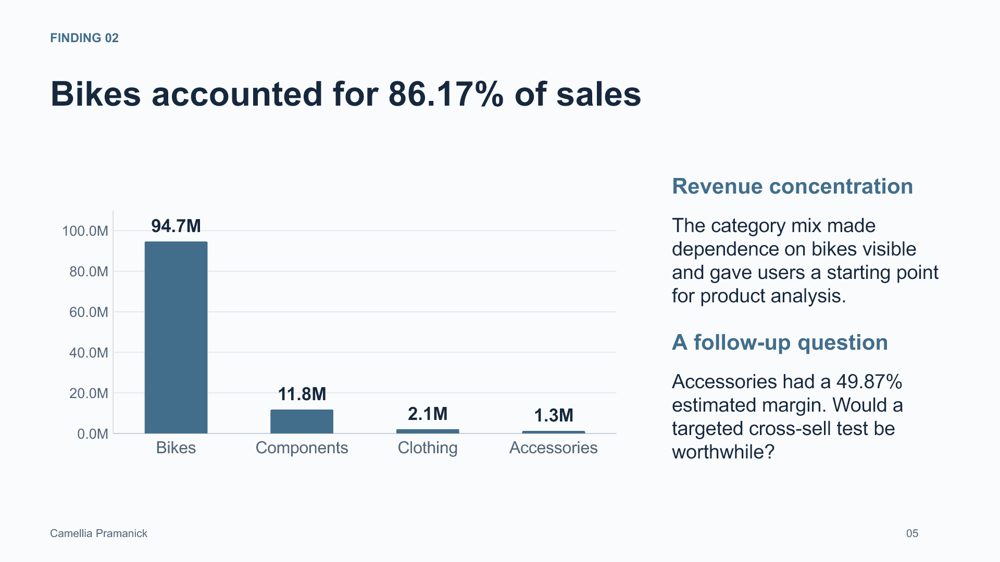
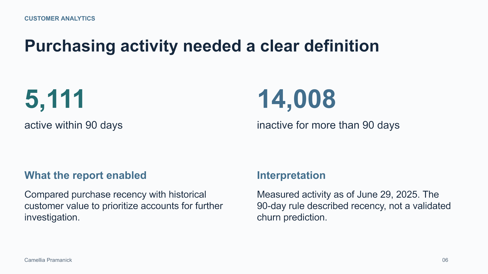

Sales & Customer Intelligence
SQL Server and Power BI case study using AdventureWorks sample data. Profit figures are standard-cost estimates.





![QUALITY AND BUSINESS USE Reliable reporting required validation Camellia Pramanick 08 Data checks Validated fact grain, dimension keys and relationship coverage. The embedded data had no duplicate detail IDs or unmatched dimension keys. Important limits Profit used standard costs. Partial years required comparable periods. Customer names were not unique account identifiers. Skills demonstrated T-SQL, dimensional modeling, Power Query, DAX filter context, KPI definitions and business interpretation. Business value Provided a consistent way to investigate sales concentration, customer activity and estimated profitability in sample data.](slide-08.png)
Read slide text
Slide 1
BUSINESS INTELLIGENCE Camellia Pramanick 01 Sales & Customer Intelligence SQL Server and Power BI portfolio case study camelliapramanik.github.io
Slide 2
THE WORK A sales model built for business questions Camellia Pramanick 02 Business questions Where did revenue come from? Which customers remained active? How did product and channel margins compare? My contribution Built the SQL analytics layer, transformed data in Power Query, and developed a Power BI model and DAX measures. 1 fact table Sales order detail grain 5 dimensions Date, customer, product, territory and salesperson 55 measures Reusable KPI definitions
Slide 3
SAMPLE DATA The analytical scope Camellia Pramanick 03 121,317 sales-detail rows 31,465 distinct orders 19,119 purchasing customers 109.85M net sales in source monetary units Reporting period: May 30, 2022 to June 29, 2025
Slide 4
FINDING 01 Channel revenue and margin diverged Camellia Pramanick 04 Share of net sales Estimated standard-cost margin Decision supported: review product mix, discounts and cost assumptions before changing channel strategy.
Slide 5
FINDING 02 Bikes accounted for 86.17% of sales Camellia Pramanick 05 Revenue concentration The category mix made dependence on bikes visible and gave users a starting point for product analysis. A follow-up question Accessories had a 49.87% estimated margin. Would a targeted cross-sell test be worthwhile?
Slide 6
CUSTOMER ANALYTICS Purchasing activity needed a clear definition Camellia Pramanick 06 5,111 active within 90 days 14,008 inactive for more than 90 days What the report enabled Compared purchase recency with historical customer value to prioritize accounts for further investigation. Interpretation Measured activity as of June 29, 2025. The 90-day rule described recency, not a validated churn prediction.
Slide 7
REPORT EXPERIENCE Four report pages supported exploration Camellia Pramanick 07 Executive Overview Customer Analytics Product Performance Territory & Sales Performance Shared filters, page navigation and metric definitions supported consistent exploration. Watch the report walkthrough
Slide 8
QUALITY AND BUSINESS USE Reliable reporting required validation Camellia Pramanick 08 Data checks Validated fact grain, dimension keys and relationship coverage. The embedded data had no duplicate detail IDs or unmatched dimension keys. Important limits Profit used standard costs. Partial years required comparable periods. Customer names were not unique account identifiers. Skills demonstrated T-SQL, dimensional modeling, Power Query, DAX filter context, KPI definitions and business interpretation. Business value Provided a consistent way to investigate sales concentration, customer activity and estimated profitability in sample data.